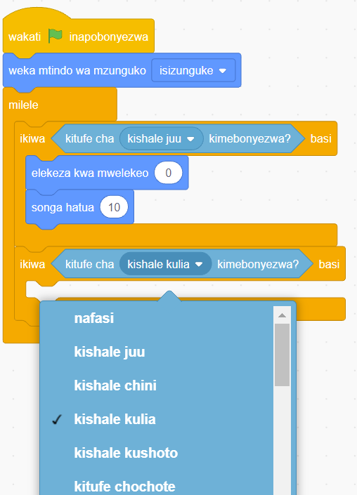

21. Bofya au tumia mishale menyu ya bloku za ‘Hisi’.
22. Buruta na dondosha bloku ya ‘kitufe cha kimebonyezwa’ kwenye eneo la kuandikia. Kisha kiingize dani ya bloku ya ‘ikiwa basi’, kisha chagua ‘kishale kulia’ kama inavyoonekana katika Kielelezo namba 62.

Maelezo ya programu fikivu ya Quorum: Bloku za programu zinaonyesha kiumbe akiwekwa katikati na masharti ya kugusa kishale juu au kishale kulia. Menyu ya kuchagua upande imefunguliwa, na kishale kulia kimechaguliwa.Kielelezo namba 62: bloku ya ikiwa basi imeungwa kwa mara ya pili.
23. Bofya au tumia mishale menyu ya bloku za ‘Mwendo’.
24. Buruta na dondosha bloku ya ‘elekeza mwelekeo’ kwenye eneo la kuandikia. Kisha, kiingize ndani ya bloku ya ‘ikiwa basi’ kama inavyoonekana katika Kielelezo namba 63.
25. Buruta na dondosha bloku ya ‘songa hatua’ kwenye eneo la kuandikia. Kisha, iingize bloku hiyo ndani ya bloku